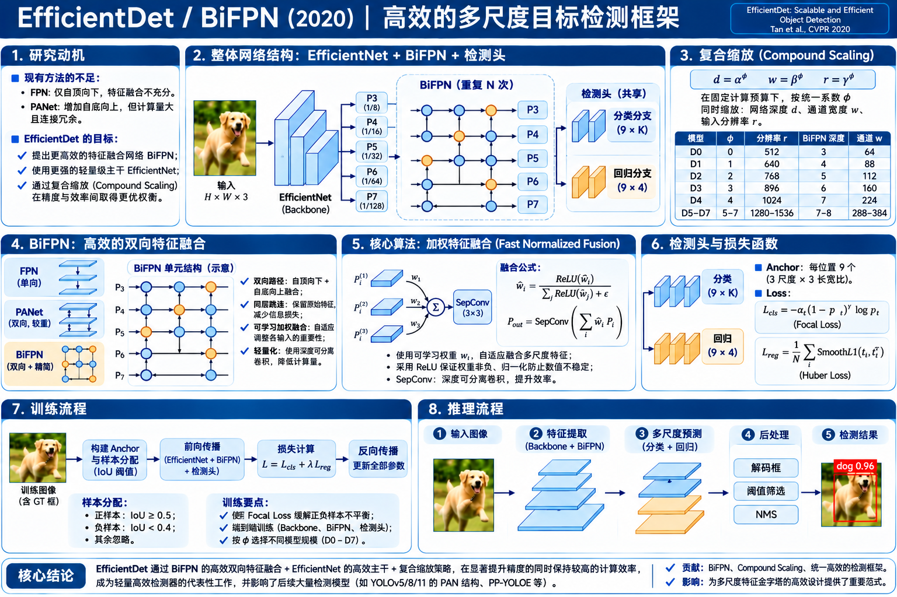

EfficientDet / BiFPN 算法原理研究笔记
这项研究不只是提出一种新的 Neck：它把高效 Backbone、加权双向多尺度融合、轻量预测头和整个检测器的复合缩放组合起来，研究如何在不同算力预算下同时提升精度与效率。
研究动机：FPN、PANet 都已有，为什么还要 BiFPN？
研究问题不是能不能融合多尺度，而是如何用更低的计算代价获得更有效的融合。
到 2019–2020 年，单阶段检测已具有 SSD、RetinaNet 等成熟方案；FPN 提供自顶向下的语义传播，PANet 又加入自底向上的信息回流。但真实检测器在精度提高时，网络规模、分辨率和跨层融合的成本也不断增加。
不同尺度的特征互相补充
浅层分辨率高，深层语义强。单向融合无法充分交换双向信息；复杂交叉连接又增加计算开销。
每路输入不一定同等重要
直接相加默认各输入等权。实际不同尺度的输入对同一输出特征的贡献可能不同。
仅加大 Backbone 不够
提升分辨率、BiFPN 宽度/层数、检测头层数的组合需要一起考虑，不能单独扩大某个局部。
Bottom-up Backbone → Top-down + Lateral
解决：高分辨率浅层缺乏语义。
主要增加一条自顶向下的信息流。FPN → Bottom-up Path + Adaptive RoI Pooling
解决：定位信息上行路径长、单层 RoI 特征利用有限。
PANet 是更完整的实例分割框架。简化双向拓扑 + 同层跳连 + 多次重复 + 加权融合
解决：在精度、参数和延迟间更高效地融合。
BiFPN 只是 EfficientDet 的特征融合组件。网络结构：EfficientNet → BiFPN → Class / Box Nets
先把单次前向的真实计算链路建立起来，明确每个模块的输入、输出和参数。

EfficientNet
使用 ImageNet 预训练的 EfficientNet 系列，输出多层次视觉特征。BiFPN 的输入先统一通道数，避免不同尺度、不同通道直接相加。
BiFPN
对 P3–P7 进行自顶向下与自底向上的双向融合；每个融合节点学习不同输入路径的非负标量权重，可重复多个 BiFPN 单元。
Class Net + Box Net
在每个尺度上直接对 Anchor 分类与回归，无 RPN、无 RoI Pooling；类别分支与边框分支参数各自跨金字塔层共享。
1.1 检测头到底输出多少数字？
假设某层的特征为 H × W × C，每个位置有 A=9 个 Anchor，类别数量为 K。这一层的预测结果是：
分类头：H × W × (9K)
针对每个 Anchor，输出 K 个类别 logit，各自经 Sigmoid 变成概率。不含单独的 objectness 预测分支；它也不需要额外的“背景类 Softmax”输出。
回归头：H × W × (9 × 4)
每个 Anchor 只预测一组 (tₓ,tᵧ,t𝓌,tₕ)，用于平移中心与缩放宽高。原始 EfficientDet 的框回归是类别无关的。
分类/回归网络各是重复的轻量卷积子网（深度随 D0–D7 改变），预测头在每一个尺度都运行，但是同一类子网在 P3–P7 上共享卷积核参数。共享参数不意味着只在某一个尺度产生预测。
核心算法：BiFPN 怎样融合五个尺度？
先理解连接拓扑，再理解可学习权重，最后看如何压缩计算量。
2.1 三项拓扑决策：删除、跳连、重复
删除单输入融合节点
只有一路输入的中间节点没有真正融合不同尺度的信息，删去可以减少额外变换，保留有效的融合路径。
同层原始输入跳连
若输出所在尺度与原始输入同级，就增加输入直达输出的连接，融合既有原始信息，也有跨层传播后的信息。
重复双向单元
把一次 top-down + bottom-up 看作一个 BiFPN 单元，反复堆叠以实现更充分的跨尺度信息交换。
以中间层 P6 为例，它在一次双向融合里通常经过两次不同计算：先融合 P6 与更深的 P7，再把这一中间结果与原始 P6 和来自 P5 的特征合并。此时三条路径对输出的贡献可能不同。
P₆ᵒᵘᵗ = SepConv( [w'₁ · P₆ᶦⁿ + w'₂ · P₆ᵗᵈ + w'₃ · Resize(P₅ᵒᵘᵗ)] / [w'₁ + w'₂ + w'₃ + ε] )Resize：先保证空间分辨率一致；w：每条输入边对应的可学习非负权重；ε=10⁻⁴；SepConv 表示高效的深度可分离卷积（图中公式省略 BN、激活细节）。
2.2 Fast Normalized Fusion：为什么要给每路特征加权？
如果两张特征图已经对齐，最简单是逐元素相加：O = I₁ + I₂。但这等价于固定所有路径的相对贡献。BiFPN 为每条融合输入边学习非负标量权重（不是给每个像素单独预测注意力图），让整个网络自己决定不同输入在该融合节点的重要程度。
方案 A · 无界加权
能学习权重，但不加约束会使数值尺度变化较大，可能影响优化稳定性。
方案 B · Softmax 归一化
权重和为 1，但 Softmax 算子增加融合开销。
方案 C · Fast Normalized
利用 ReLU 保证非负，以简单除法近似归一化，论文主方案。
2.3 计算量优化：深度可分离卷积，不只改路径
BiFPN 的效率还来自Depthwise Separable Convolution。它将标准 k×k 卷积分解为逐通道空间卷积（Depthwise）和跨通道 1×1 卷积（Pointwise），在特征融合节点后做局部信息混合。
标准 3×3 卷积
每个输出通道都需要跨所有输入通道做 3×3 卷积。
深度可分离 3×3 卷积
先逐通道过滤空间，再用 1×1 混合通道。论文同时使用 BN 与 Swish/SiLU 类激活。
复合缩放：为什么 EfficientDet 不止有一个 D0？
“网络结构”还包括深度、宽度、分辨率如何组合分配预算，不只是单个卷积块的形状。
FPN、PANet 讨论的是怎样融合特征；EfficientDet 又讨论给定算力预算，整套检测器应该怎样同时变大。作者以 D0 为基线，用系数 φ 控制 Backbone 型号、BiFPN 宽度、BiFPN 重复层数、检测头深度及输入图像分辨率。
输入分辨率
EfficientNet 版本
通道数 × 双向单元数
每个子网的卷积层数
| 模型 | 输入 | Backbone | BiFPN 通道 | BiFPN 层数 | 分类/回归头层数 |
|---|---|---|---|---|---|
| D0 | 512 | B0 | 64 | 3 | 3 |
| D1 | 640 | B1 | 88 | 4 | 3 |
| D2 | 768 | B2 | 112 | 5 | 3 |
| D3 | 896 | B3 | 160 | 6 | 4 |
| D4 | 1024 | B4 | 224 | 7 | 4 |
| D5 | 1280 | B5 | 288 | 7 | 4 |
| D6 | 1280 | B6 | 384 | 8 | 5 |
| D7 | 1536 | B6 | 384 | 8 | 5 |
改变分辨率，会改变什么？
更高分辨率保留更多小目标空间信息，也让 P3–P7 的特征图更大，密集预测位置和计算量通常随之增加。
改变 BiFPN 深度与宽度，会改变什么？
增加重复次数允许更充分的跨尺度信息交换；增加通道数提高特征容量，但计算与内存代价也会增加。
Anchor、预测结果与边框解码
EfficientDet 仍属于基于 Anchor 的密集单阶段检测，不是 Anchor-free，也不是 Proposal-based。
width = base × √ratio；height = base / √ratio以官方默认 anchor_scale=4、3 个尺度、3 个宽高比为例。D7 等特殊配置可能调整 anchor_scale。
P3，每个位置 9 个形状中的 1 个
4.1 D0 的总候选框数怎么算？
D0 输入为 512×512，五层 P3–P7 的位置数依次是 64²、32²、16²、8²、4²；每个位置 9 个 Anchor，因此：
分类输出
49,104 × K 个分类 logit，针对每个 Anchor 逐类别 Sigmoid。与 RetinaNet 类似，训练时用 Focal Loss 控制大量容易背景样本的影响。
回归输出
49,104 × 4 个类别无关偏移量。每个 Anchor 对应一组 (tₓ,tᵧ,t𝓌,tₕ)，将 Anchor 细化为预测框。
4.2 如何将预测值变成真实框？
w = wₐ · exp(t𝓌)， h = hₐ · exp(tₕ)(xₐ,yₐ,wₐ,hₐ)：Anchor 的中心、宽、高；(tₓ,tᵧ,t𝓌,tₕ)：回归头的连续输出。实际实现可能在目标编码/解码中使用固定缩放系数（如尺度归一化），这里写的是经典框回归的基本形式。
完整训练：Loss 如何同时更新主干、BiFPN、检测头与融合权重？
把“预训练、目标分配、分类损失、框损失、反向传播”严格按计算顺序连接。
预训练 + 检测数据
Backbone 初始化使用 ImageNet 预训练权重；检测阶段从 COCO 的图像、类别和边框监督开始。原论文使用裁剪、缩放、翻转等数据增强。
给密集预测定义目标
每个 Anchor 与 GT 求 IoU，并按照实现的匹配规则标注前景、背景或忽略，前景样本才参与框回归。它不是 RPN 的 proposal 筛选，也不是 NMS。
Focal Loss
对密集分类使用独立的 Sigmoid 目标；通过 (1−pₜ)^γ 抑制已经学会的容易样本。原论文设置 α=0.25、γ=1.5。
Huber / Smooth L1
对匹配到 GT 的正样本回归 Anchor 偏移量，使用 Huber 型定位损失。背景 Anchor 不承担回归 GT 框的任务。
5.1 Focal Loss 不是 BiFPN 发明的，但在 EfficientDet 训练中仍很重要
γ=0 时是 α 加权 CE。γ 越大，容易样本 pₜ 越接近 1，其损失权重越低。
5.2 梯度真正传向哪里？
| 训练对象 | 接受的监督 | 主要更新 |
|---|---|---|
| 分类子网 | Focal Loss | 类别分类卷积参数与输出层 |
| 回归子网 | Huber / Smooth L1 | 类别无关的边框回归卷积参数 |
| BiFPN | 两类 Loss 的梯度经融合层返回 | 深度可分离卷积、跨层融合权重等 |
| EfficientNet Backbone | 来自检测头与 BiFPN 的链式梯度 | 预训练主干在检测任务中微调 |
完整推理：怎样从一张图像得到最终检测框？
完整单阶段路径：不生成 Proposal，不做 RoI Pooling，直接密集预测并后处理。
512×512（D0）
类别概率如何得到？
Class Net 为每个 Anchor 的每个类别输出一个 logit，经 Sigmoid 得到类别分数。它不同于两阶段 Fast R-CNN 的 RoI 内 K+1 类 Softmax。
什么是最终框？
把 Box Net 输出的偏移量解码为每个 Anchor 的实际矩形，按类别分数筛选、对重叠框执行按类别 NMS，并映射回原始图像坐标。
框 B、C 与 A 的 IoU 不同；降低阈值会抑制更多重叠框，提高阈值可能留下更多重复框。
历史地位、适用边界与容易混淆的概念
把 EfficientDet 放回目标检测技术演进中，而不是把所有组件归功于它。
| 研究 | 当时的重要问题 | 核心做法 | 与 EfficientDet 的关系 |
|---|---|---|---|
| FPN · 2017 | 不同层语义强度不平衡 | Top-down + Lateral | 建立跨尺度融合的经典底座 |
| PANet · 2018 | 定位信息跨层传播路径长 | 添加 Bottom-up，并扩展 RoI/Mask 机制 | 双向路径启发；并非相同完整网络 |
| NAS-FPN · 2019 | 设计更强多尺度特征网络 | NAS 搜索复杂多尺度拓扑 | BiFPN 更强调结构规则与效率 |
| RetinaNet · 2017 | 密集背景样本使分类难优化 | Focal Loss + Anchor-based one-stage | EfficientDet 继承 Focal Loss 的检测范式 |
| EfficientDet · 2020 | 跨预算的检测精度/效率平衡 | EfficientNet + BiFPN + Compound Scaling | 从整体网络资源分配而非单个模块优化 |
它最值得继承的思想
多尺度不仅涉及连接拓扑，还涉及各输入贡献的差异；检测器的性能是 Backbone、Neck、Head、输入尺度与硬件共同作用的结果。 BiFPN 的规则化拓扑易于重复和缩放。
它没有解决所有问题
它依赖 Anchor 设计、匹配策略、后处理 NMS，超大配置仍然昂贵。可学习融合权重只是每条边的标量，不等于细粒度的逐像素注意力机制；参数更少也不能保证所有硬件上的实测延迟最小。
fpn_weight_method='sum'（无权重求和）。因此，“所有 D0–D7 都使用完全相同的 fast weighted fusion”是不准确的。融合权重 + 深度可分离卷积
Anchor + Focal + Box Loss
检测头协同配置
论文与技术来源
优先依据原论文与 Google 官方实现；避免将后续工程改动误当原论文贡献。
主论文：Mingxing Tan, Ruoming Pang, Quoc V. Le. EfficientDet: Scalable and Efficient Object Detection. CVPR 2020.
论文原版 AP / FLOPs 数字与后续 arXiv、GitHub README 新增 D7x 或复训版本可能不同；如需精度排行，应注明版本、模型、测试集与推理设置。